Übung 0 - Infrastruktur einrichten
- Wählen Sie eine IDE aus und installieren Sie diese
- Richten Sie sich ein Git-Repository ein (z.B. WebTech24)
- Erstellen Sie im Ordner WebTech24 eine
index.htmlund versuchen Sie darin bereits einige Inhalte einzupflegen, z.B. eine kleine persönliche Webseite oder eine Startseite, von der aus alle Übungen erreichbar sind. - Commiten und pushen Sie Ihr Repository auf einen zentralen Dienst (siehe)
- Laden Sie mich zu Ihrem Git-Dienst ein (siehe)
Übung 1 - HTML
- Erstellen Sie in einem
Uebung1-Ordner eine Dateiuebung1.html. Dasbody-Element soll einheader-Element, einnav-Element, einsection-Element und einfooter-Element enthalten. - Unter dieser Übungsaufgabe (siehe
mockupdata) ist der HTML-Code einer Tabelle mit allen Teilnehmerinnen einer Veranstaltung. Kopieren Sie den Inhalt der Datei so in Ihren HTML-Code, dass folgende Seite erscheint:
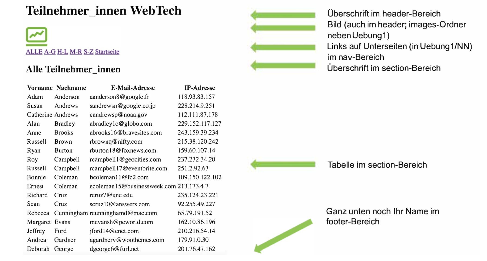
- Es sollen 4 Unterseiten erstellt werden. Bei Klick auf diese Seiten soll die Tabelle jeweils nur die Teilnehmerinnen enthalten, deren Nachname mit dem entsprechenden Anfangsbuchstaben beginnt (also in
ag.htmlnur alle Nachnamen, die mit A bis G beginnen). Die Seitenag.html,hl.html,mr.htmlundsz.htmlsollen im OrdnerNNabgelegt werden, der Unterordner vonUebung1ist. - Achten Sie darauf, dass man von jeder Unterseite auf jede andere Unterseite und auch auf die Hauptseite (
uebung1.html) wechseln können muss. - Das einzubindende Logo des Studiengangs liegthier. Es soll in einen
images-Ordner gespeichert werden, der in der Ordner-Hierarchie neben demUebung1-Ordner liegt. Um die Größe des Bildes festzulegen, können Sie mit Hilfe desstyle-Attributes die Höhe und die Breite bestimmen:style="width:53px; height:48px;" - Nächste Woche wird Uebung1 um CSS erweitert.
- Erstellen Sie (falls noch nicht geschehen) eine
index.html -Datei in Ihrem Repository-Ordner (also z.B.WebTech24) derart, dass diese direkte Links auf Ihre Lösungen der Übungen enthalten (z.B. in einer Tabelle oder einer Liste). - Kopieren Sie den Ordner
Uebung1in den OrdnerUebung2(also inkl. OrdnerNN). Ändern Sie darin die Dateiuebung1.htmlzuuebung2.html(umbenennen). Ändern Sie entsprechend alle Links innerhalb der Datei, damit Sie z.B. auf den OrdnerUebung2/NNzugreifen und nicht mehr aufUebung1/NN. - Legen Sie sich im
Uebung2-Ordner einen Ordnerstylesan. Erstellen Sie in demstyles-Ordner eine Dateimystyles.css. - Fügen Sie im
<head>-Bereich deruebung2.htmleine logische Verknüpfung zurmystyles.css-Datei ein (<link href="./styles/mystyles.css" rel="stylesheet">). - In
mystyles.cssdefinieren Sie (versuchen Sie so viel wie möglich der folgenden Punkte umzusetzen, probieren Sie auch ruhig selbst etwas aus): - Verdana als Schriftart für das ganze Dokument
- der
<header>soll das HTW-Grau als Hintergrundfarbe, HTW-Orange als Schriftfarbe und der Text zentriert sein (siehe Corporate Design). - die Tabelle soll ungefähr wie dargestellt aussehen: 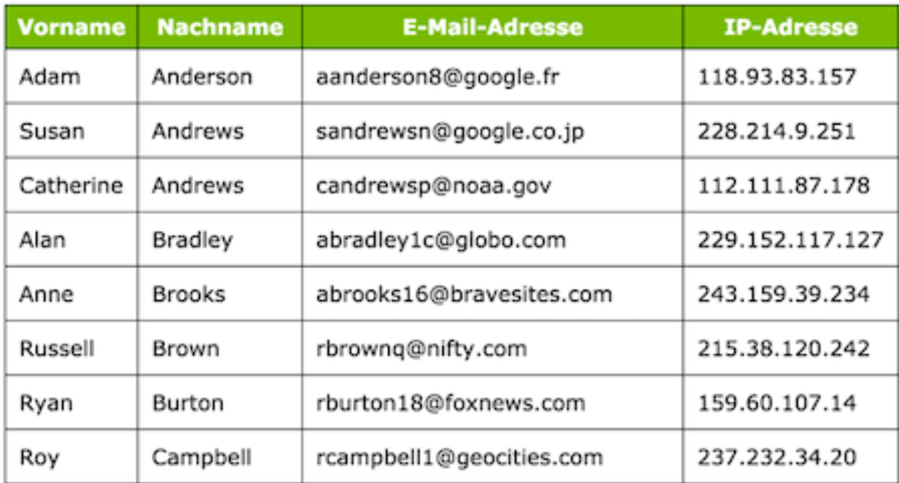
- d.h. mit Rahmen, mit einem Schatten, die Spaltenüberschriften in weiß, mit HTW-grünem Hintergrund.
<a>-Elemente in einem<nav>-Element haben einen grauen Rand, deren Ecken abgerundet sind. Die Hintergrundfarbe ist HTW-blau. Schriftart ist weiß und bold.<a>-Elemente in einem<nav>-Element sind nicht unterstrichen!- Der
<footer>ist in HTW-Orange, die Schrift ist schwarz, der Text ist mittig und die Schrift ist kleiner. Die Höhe des footers entsteht dadurch, dass die Schrift einen Abstand (informieren Sie sich über den Unterschied von<margin>und<padding>) nach oben und nach unten von jeweils<20px>hat. - Am Ende soll es ungefähr so aussehen: 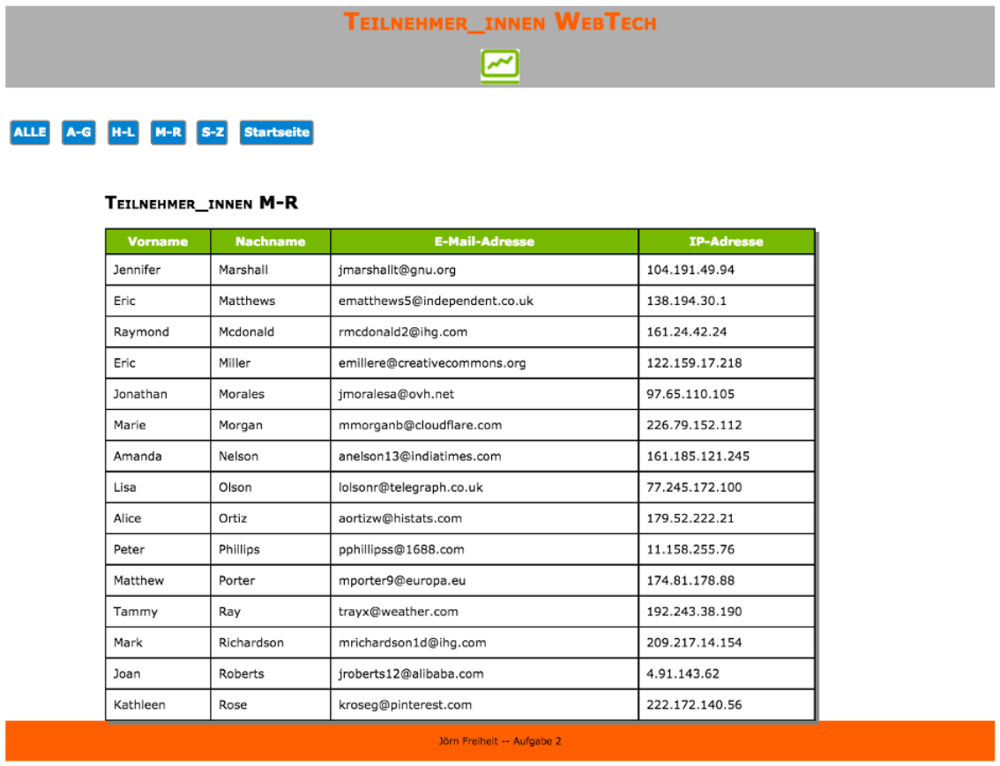
Übung 2 - CSS
Übung 3 - Grid und Einheiten
- Erstellen Sie einen
Uebung3-Ordner und darin eine Dateiuebung3.html. Kopieren Sie diesen Inhalt in uebung3.html (Rechtsklick auf die Seite undSeitenquelltext anzeigen- falls ein<script>-Element unten ist, können Sie es löschen; Sie können es auch unten kopieren). - Laden Sie sich hier die Datei images.zip herunter, entpacken Sie sie und schieben Sie den
images-Ordner samt Inhalt in denUebung3-Ordner. - Implementieren Sie die
uebung3.htmlso, dass ungefähr folgendes Aussehen entsteht:
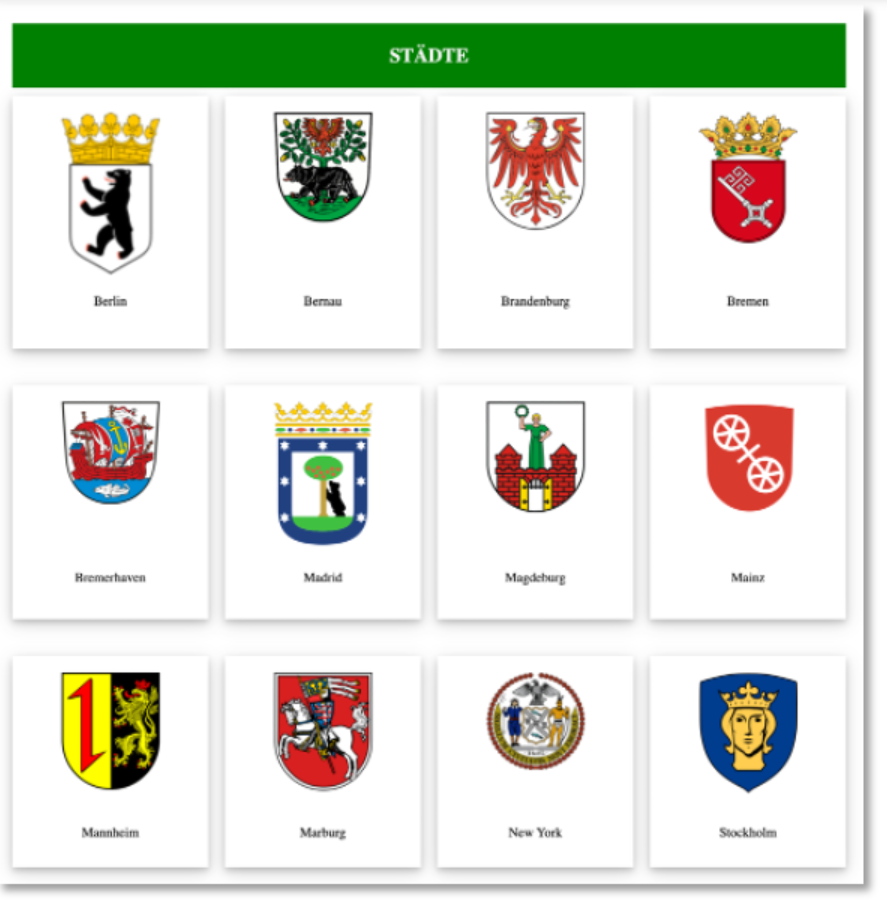
- Sie können die CSS-Eigenschaften innerhalb der
uebung3.htmlim<style>-Element definieren oder wieder in einer externen Datei. - Ziele der Übung sind die Anwendung von CSS-Grid (siehe z.B. hier) sowie die Verwendung von Größen und Einheiten (siehe z.B. hier). Lassen Sie Ihrer Kreativität freien Lauf!
Übung 4 - Bootstrap
- Erstellen Sie einen
Uebung4-Ordner und darin eine Dateiuebung4.html. - Implementieren Sie die
uebung4.htmlmithilfe von Bootstrap so, dass ungefähr folgendes - Aussehen entsteht: 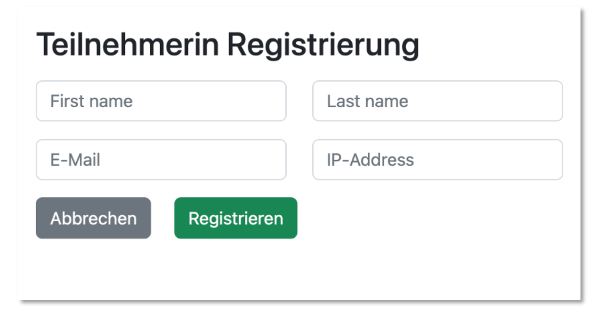
- Ziel der Übung ist die Anwendung von CSS-Bootstrap und das Erstellen von Formularen. (Content Delivery Networks (CDN) -- dann sieht es folgendermaßen aus:
<head>
<meta charset="UTF-8">
<meta name="viewport" content="width=device-width, initial-scale=1, shrink-to-fit=no">
<link href="https://cdn.jsdelivr.net/npm/bootstrap@5.3.3/dist/css/bootstrap.min.css" rel="stylesheet"
integrity="sha384-QWTKZyjpPEjISv5WaRU9OFeRpok6YctnYmDr5pNlyT2bRjXh0JMhjY6hW+ALEwIH" crossorigin="anonymous">
<title>Title</title>
</head>
Den entsprechenden Link zum CDN finden Sie auf der Bootstrap-Webseite.
Sie können die CSS-Dateien aber auch herunterladen. Auf der Download Bootstrap-Webseite klicken Sie unter "Compiled CSS and JS" auf den "Download"-Button. Sie erhalten eine Datei bootstrap-5.1.3-dist.zip. Entpacken Sie diese Datei. Der entstehende Ordner enthält 2 Unterordner css und js. Letzterer enthält JavaScript-Dateien des Frameworks. Diese benötigen wir für unsere Zwecke hier (noch) nicht. Verschieben Sie den css-Ordner in Ihren Projekt-Ordner (z.B. Webtech20). Dann können Sie diese externen Dateien mit dem <link>-Tag wie bekannt einbinden. Der <head> sieht dann so aus:
<head>
<meta charset="UTF-8">
<meta name="viewport" content="width=device-width, initial-scale=1, shrink-to-fit=no">
<link rel="stylesheet" href="./css/bootstrap.min.css">
<title>Title</title>
</head>
Übung 4a - JavaScript
- Erweitern Sie einen die Datei
uebung4.htmlaus demUebung4-Ordner. - Sind in das Formular Daten eingegeben und wird der
Registrieren-Button gedrückt, dann erscheint mithilfe einer JavaScript-Funktion:
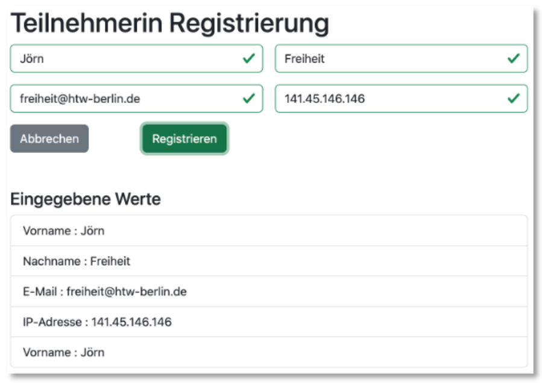
- Wird der
Abbrechen-Button gedrückt, werden alle bereits eingegebenen Daten wieder aus den Textfeldern entfernt. - Prüfen Sie außerdem die Eingaben (siehe Validation) 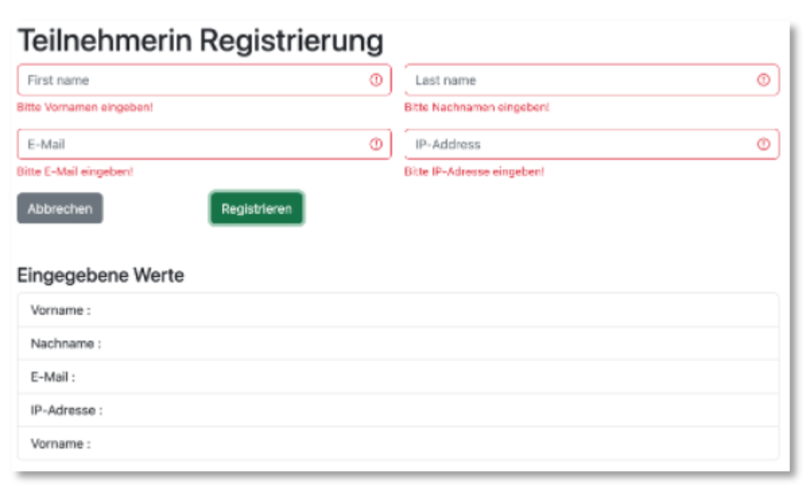 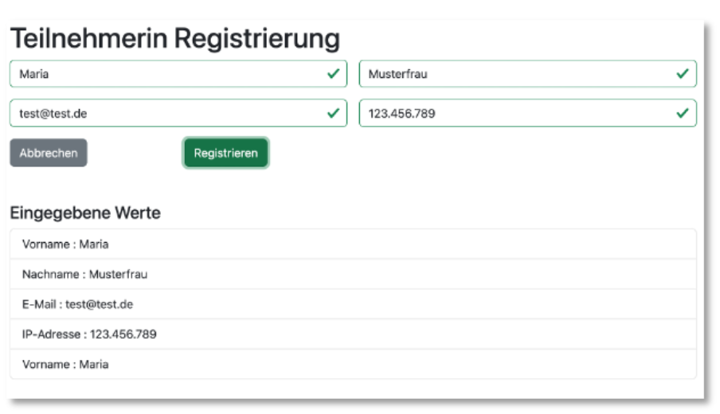
- Ziel der Übung ist die Anwendung von JavaScript.
Übung 5 - JavaScript,DOM
- Laden Sie hier die Datei
Uebung5.zipherunter, entpacken Sie sie und schieben den OrdnerUebung5in Ihren Projektordner. - In der Datei uebung5.html sind einige Dinge vorbereitet:
- eine Tabelle mit leerem <tbody>. Der <tbody> hat die
id='tbody', - wird die Seite geladen, wird die
init()-Funktion aufgerufen (onload='init()'), - eine JavaScript-Funktion
getStaedte(). Diese Funktion "holt" die Dateistaedte.json(liegt imUebung5-Ordner) und gibt sie zurück, - eine Variable
staedtearr, in der das Array geladen werden soll, das diestaedte.jsonenthält. Achtung! das Array selbst ist der Wert, der im JSON unter dem Schlüsselstaedtesteht (schauen Sie sich die Dateistaedte.jsonan), - eine JavaScript-Funktion
createTable(), die Sie verwenden sollen, um die Tabelle mit Werten zu befüllen. Schauen Sie sich auch die Kommentare inuebung5.htmlan. - Befüllen Sie die Tabelle unter Verwendung der Daten aus
staedte.json - für jede neu entstehende Tabellenzeile müssen Sie fünf neue
td-Objekte kreieren und diese an ein neu kreiertestr-Objekt anhängen. Dastr-Obejkt hängen Sie wiederum an dentbody. - die Nummer in der ersten Spalte erstellen Sie einfach fortlaufend mit dem Wert von
nr, den Sie für jede Zeile erhöhen. - der Info-Button ist ein Hyperlink mit der Bootstrap-Klasse
btn; also<a class="btn btn-success btn-sm" href="">Info</a>. Der Wert fürhreffindet sich jeweils unter demlinkfür jede Stadt instaedte.json. - für das Bild verwenden Sie den
bild-Link ausstaedte.jsonalssrc. Geben Sie auch dem Attributalteinen Wert (diestadtausstaedte.json). - die Tabelle sieht dann so aus:
- Bei Eingabe in das Textfeld von
Filterwird bei jedem Zeichen, das eingegeben wird, die FunktioncreateTable()aufgerufen (sieheoninput="createTable()"). Es sollen nun nur noch die Städte angezeigt werden, deren Stadtnamen oder deren Gründungsjahr zur Eingabe passt. - Wird also z.B.
breingegeben, dann erscheinen nur die Städte, die mitBrbeginnen (Groß- und Kleinschreibung egal, siehetoLowerCase()):
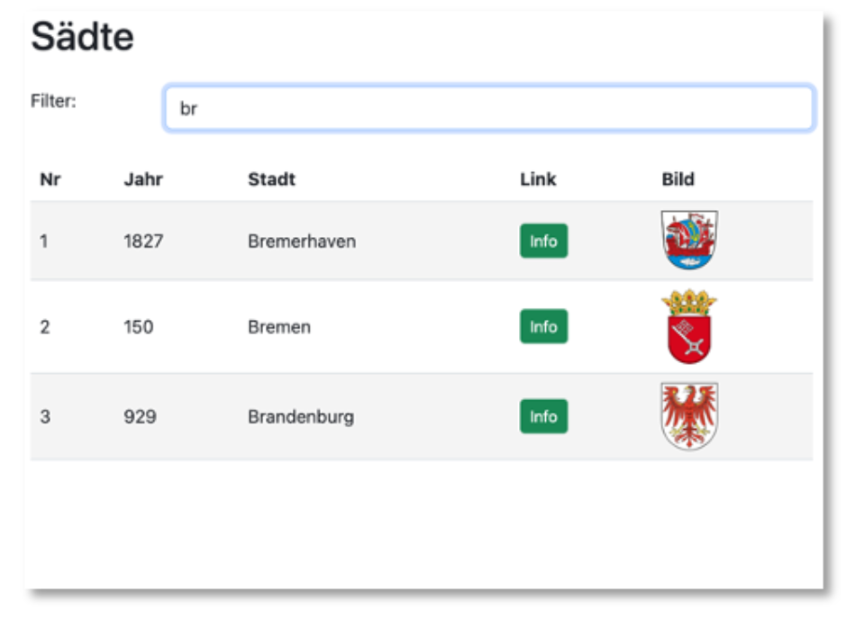
- Wird also z.B.
12eingegeben, dann erscheinen nur die Städte, deren Gründungsjahr mit12beginnt:
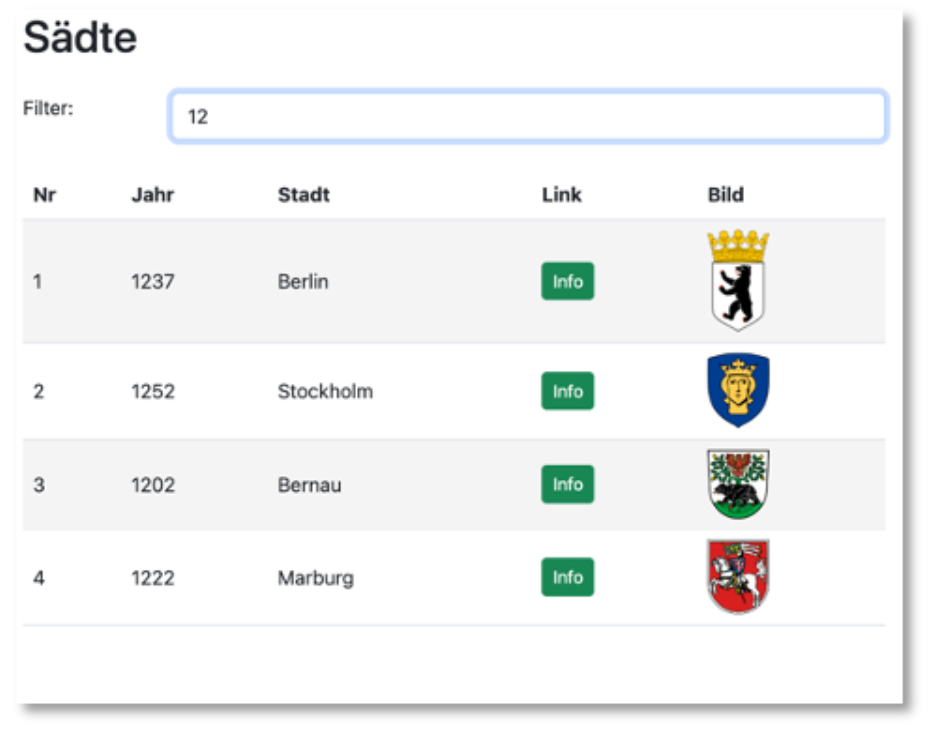
- Tipp: Sie laufen in einer Schleife durch das Array, um alle Städte auszulesen. Fügen Sie darin eine Bedingung ein, dass Sie nur die Städte der Tabelle hinzufügen, die der Filter-Eingabe entsprechen.
Übung 6 - Angular Komponenten
- Erstellen Sie ein neues Angular-Projekt
Uebung6(siehe hier). - Erstellen Sie mindestens folgende Komponenten:
header,nav,footer,tableundform - Gestalten Sie
header,navundfooterso, dass es ungefähr so aussieht:
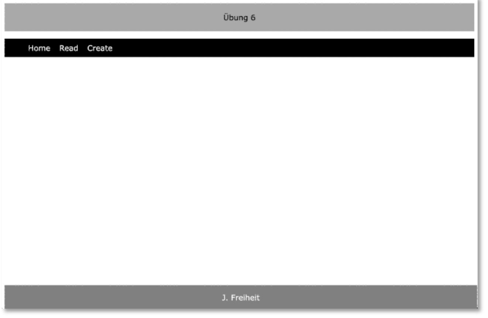
- Erstellen Sie für die
TableComponentdie Routereadund für dieFormComponentdie Routecreate, so dass fürlocalhost:4200/createungefähr folgende Ansicht erscheint:
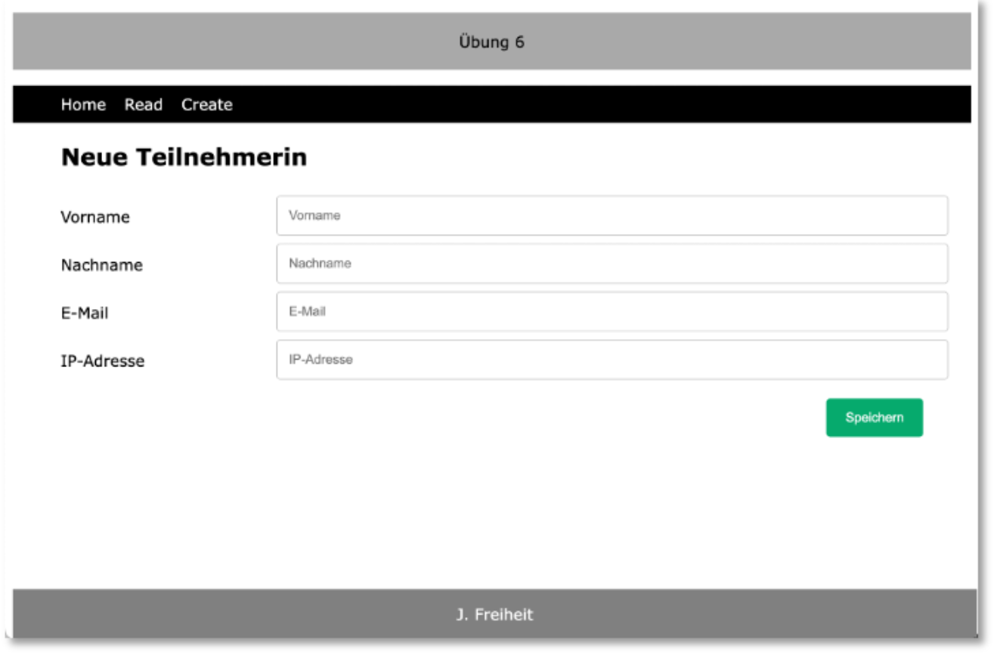
- In der nächsten Übung befüllen wir die Tabelle mithilfe eines Services.
Diese drei Komponenten sollen mittels Komponentenselektoren in die AppComponent eingebunden werden.
Diese Komponente enthält ein Formular. Für localhost:4200/read erscheint ungefähr folgende Ansicht:
Diese Komponente enthält eine Tabelle. Es ist nur der Tabellenkopf mit den Spaltenüberschriften zu sehen.
Übung 7 - JSON, Templates, Service
- Nutzen Sie Ihre Implementierung aus
Uebung6- wenn nicht, erstellen Sie ein neues Angular-ProjektUebung7(siehe hier). - Erstellen Sie im
public-Ordner eine Dateimembers.jsonmit folgendem Inhalt:
members.json
- Erstellen Sie einen Service
members.service.ts, in dem diemembers.jsonperfetch()eingelesen wird und der eine Funktion zur Verfügung stellt, die allemembersals Array zurückgibt. Erstellen Sie ein passendesMembers-Interface, um die Typsicherheit zu verbessern. - Befüllen Sie mit den Daten aus
members.jsoneine Tabelle:
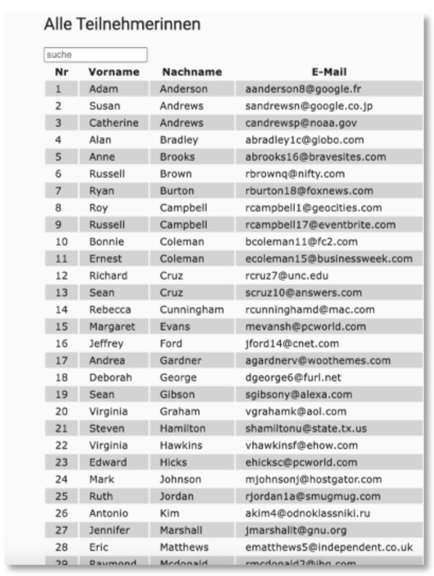
- Implementieren Sie für das Suchfeld die Behandlung des
input-Ereignisses so, dass nur die Teilnehmerinnen in der Tabelle erscheinen, deren Vor- oder Nachnamen den Suchstring enthalten:
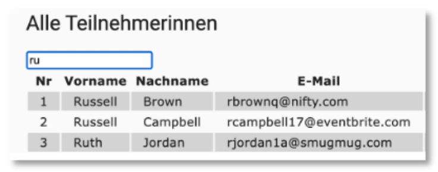
- Alle Bilder sind nur Anregungen, kann gerne ganz anders aussehen. Gerne können Sie auch Bootstrap einbinden und verwenden (siehe z.B. hier).